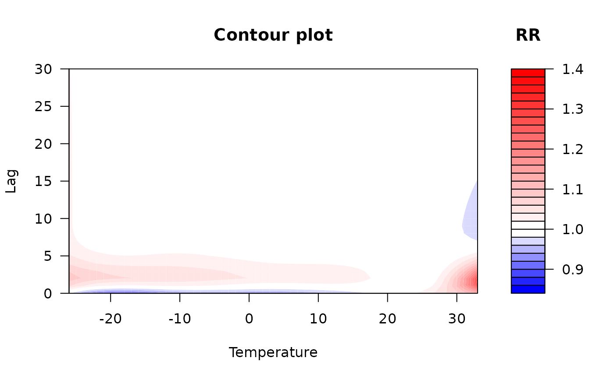

Generate a filled contour plot for DLNM output with custom color levels
Source:R/plot_contour_dlnm.R
plot_contour_dlnm.RdThis function is a modified version of dlnm::plot.crosspred()
from the dlnm package.
It generates a filled contour plot to visualize the estimated
exposure-lag-response association from a distributed lag non-linear model
(DLNM) object of class "crosspred".
Usage
plot_contour_dlnm(
x,
z_range = NULL,
nlevels = 20,
color1 = "blue",
color2 = "red",
color3 = "white",
ci_level = x$ci.level,
exp = NULL,
...
)Arguments
- x
An object of class "crosspred", typically generated using
crosspred.- z_range
Optional numeric vector specifying the range of values for the contour levels. If
NULL, the range defaults to the same automatic setting used indlnm::plot.crosspred().- nlevels
Integer. The number of contour levels to display. Default is 20.
- color1
Character string. Color used for negative (below reference) effects. Default is
"blue".- color2
Character string. Color used for positive (above reference) effects. Default is
"red".- color3
Character string. Color used for the reference effect level. Default is
"white".- ci_level
Numeric. A value between 0 and 1 specifying the confidence level. Defaults to the
ci_levelstored in thexobject.- exp
Logical. Indicating whether to exponentiate the estimates (e.g., for relative risks). If
NULL, exponentiation is automatically applied for log or logit link models.- ...
Additional graphical parameters passed to
graphics::filled.contour().
Details
This function builds on dlnm::plot.crosspred() from
the dlnm package, adding the ability to customize z-scale color levels
via z_range, nlevels, and color*, which are set
automatically in the original implementation.
Generate a contour plot of predicted effects over the predictor-lag space.
Additional graphical options like plot.title, plot.axes,
and key.title can be provided to adjust titles and axis/key labels.
When z_range is not provided, the function produces a contour plot
identical to that returned by dlnm::plot.crosspred().
References
Gasparrini A. “Distributed lag linear and non-linear models in R: the package dlnm.” Journal of Statistical Software. 2011; 43(8):1-20. https://doi.org/10.18637/jss.v043.i08.
Examples
# Fit a model and generate "crosspred" object
library(dlnm)
#> This is dlnm 2.4.10. For details: help(dlnm) and vignette('dlnmOverview').
library(splines)
cb.pm <- crossbasis(chicagoNMMAPS$pm10,
lag = 7,
argvar = list(fun = "lin"),
arglag = list(fun = "strata"))
varknots <- equalknots(chicagoNMMAPS$temp, fun = "bs", df = 5, degree = 2)
lagknots <- logknots(30, 3)
cb.temp <- crossbasis(chicagoNMMAPS$temp,
lag = 30,
argvar = list(fun = "bs", knots = varknots),
arglag = list(knots = lagknots))
model <- glm(death ~ cb.pm + cb.temp + ns(time, 7*14) + dow,
family = quasipoisson(),
data = chicagoNMMAPS)
pred.pm <- crosspred(cb.temp, model, cen = 21, by = 1)
# When `z_range` is not provided, the function produces a contour plot
# identical to that returned by `dlnm::plot.crosspred()`.
plot_contour_dlnm(pred.pm,
xlab = "Temperature",
key.title = title("RR"),
plot.title = title("Contour plot",
xlab = "Temperature",
ylab = "Lag"))
# Change `z_range` and `nlevels` to get user-defined color levels.
plot_contour_dlnm(pred.pm,
z_range = c(0.85, 1.4),
nlevels = 30,
xlab = "Temperature",
key.title = title("RR"),
plot.title = title("Contour plot",
xlab = "Temperature",
ylab = "Lag"))

# Customize colors
plot_contour_dlnm(pred.pm,
z_range = c(0.85, 1.4),
nlevels = 30,
color1 = "darkgreen",
xlab = "Temperature",
key.title = title("RR"),
plot.title = title("Contour plot",
xlab = "Temperature",
ylab = "Lag"))